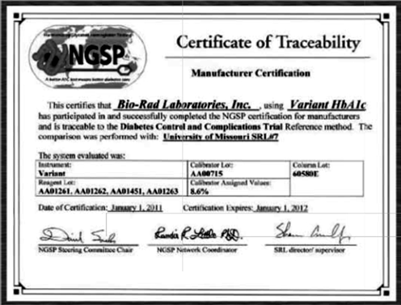
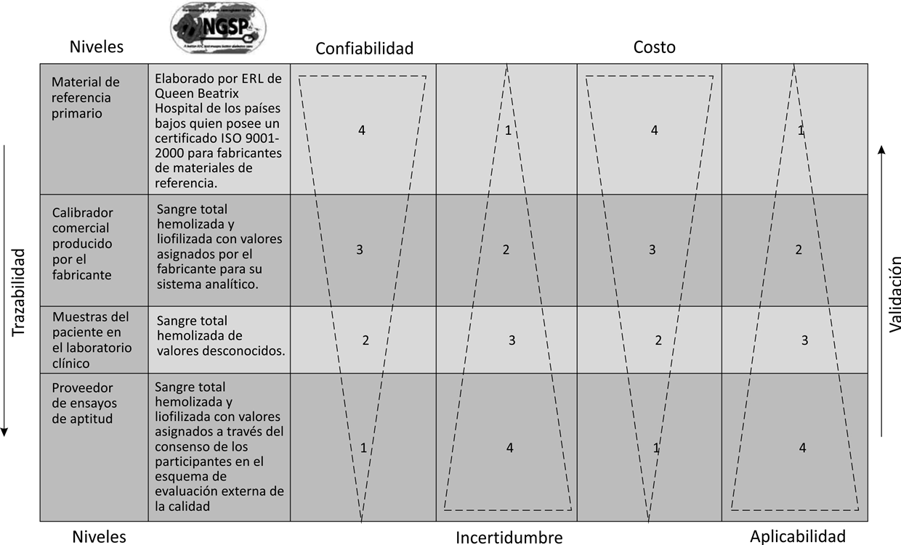
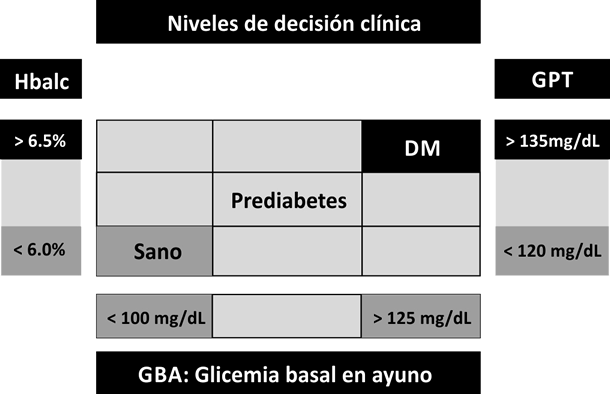

Detección, diagnóstico y control de la diabetes mellitus sobre la base de una tabla de nueve campos: GBA, HBa1c, GPT
Este artículo puede ser consultado en versión completa en:
http://www.medigraphic.com/patologiaclinica
Arturo M. Terrés-Speziale
Director de JAR Quality, S.A. de C.V.
Resumen:
Antecedentes: Ha pasado medio siglo desde el descubrimiento de HBa1 como un componente diabético en las subfracciones de la hemoglobina. Grandes mejoras han ocurrido en los sistemas diagnósticos desde 1977 cuando se introdujo HBa1 en los laboratorios clínicos. Pasaron más de 30 años hasta que HBa1c% fue estandarizado por el National Glycohemoglobin Standardization Program, para que finalmente la Asociación Americana de Diabetes lo aceptara en el año 2010 como el método de elección para el diagnóstico de diabetes mellitus, siempre y cuando se utilicen métodos certificados por NGSP.
Objetivo: Revisar la importancia de glicación de proteínas en la fisiopatología de las enfermedades cronicodegenerativas asociadas a la diabetes mellitus, además de la aplicabilidad y utilidad de HBa1c% en el diagnóstico conforme a las recomendaciones de la Asociación Americana de Diabetes 2010, aplicando una tabla de contingencia de 3 x 3.
Material y métodos: Se trata de un artículo de revisión en el que se recopila la información disponible en la literatura para establecer metas analíticas específicas, medibles, alcanzables, retadoras, para las pruebas fundamentales para la detección, diagnóstico y control de diabetes mellitus, incluyendo a 1) HBa1c%, 2) Glicemia basal en ayuno: GBA mg/dL y 3) Glicemia promedio trimestral: GPT mg/dL.
Resultados: HBa1c > 6.5% en combinación con GBA > 126 mg/dL tiene una sensibilidad de 47% y una especificidad de 98% para la detección de la diabetes, por lo que para incrementar la sensibilidad diagnóstica es conveniente que la detección de la diabetes mellitus se realice en todos los pacientes que tengan una GBA >100 mg/dL, aun cuando no presenten las «4-P» del síndrome diabético: poliuria, polidipsia, polifagia, pérdida de peso.
Discusión: La certificación de la trazabilidad analítica de los sistemas de diagnóstico de la NGSP permitió que HBa1c% alcanzara los niveles de confiabilidad y aplicabilidad básicos para permitir el uso de esta prueba en el diagnóstico clínico. La aplicación de los nuevos criterios diagnósticos de la Asociación Americana de Diabetes 2010 resultan relativamente simples, sobre todo cuando se les compara con las pruebas de tolerancia a la glucosa en términos de confiabilidad y aplicabilidad. Valdrá la pena vigilar y evaluar el impacto en los pacientes y en el sistema de salud para valorar el costo-beneficio a corto, mediano y largo plazo.
Introducción
Patología Clínica es la disciplina médica a través de la cual la ciencia y la tecnología del laboratorio se aplican para la toma de decisiones médicas en tres elementos bien definidos, incluyendo el diagnóstico, el pronóstico y la vigilancia del tratamiento.10
El laboratorio es un elemento fundamental de los servicios de salud ya que en éste se desarrollan labores asistenciales, docentes y de investigación. El motivo por el que el médico solicita apoyo del laboratorio se puede resumir en uno solo. Necesita información confiable y oportuna para tomar decisiones seguras en beneficio del paciente en términos de efectividad, eficiencia y eficacia. El médico observa en el paciente una serie de manifestaciones de enfermedades, incluyendo signos y síntomas, los cuales, para ser objetivos y cuantitativos, requisito básico del método científico, deben ser traducidos a datos cuantitativos.
El diagnóstico oportuno, basado en evidencia, es la piedra angular del manejo efectivo y eficaz de las enfermedades, dentro del cual el laboratorio clínico juega un rol fundamental. Se calcula que, en los países desarrollados, más de 80% de las decisiones médicas se toman sobre la base de las pruebas de laboratorio con un costo de menos de 30% y que esta tendencia se sigue incrementando.
Para utilizar el laboratorio de manera adecuada es necesario:
• Saber específicamente qué estamos buscando: ¿detección, diagnóstico, pronóstico o control?
• Conocer el laboratorio al que solicitamos estudios: ¿con qué equipo cuentan? ¿Qué preparación tiene el personal que labora en él? ¿Cómo es su programa de control de calidad?
• Conocer los exámenes disponibles: en muchas ocasiones se emplean recursos rutinarios por desconocer que se dispone de estudios especiales. Del mismo modo, se pueden solicitar pruebas con las que no se cuenta y que podrían ser sustituidas por otras determinaciones igualmente útiles.
• Conocer los límites de referencia: éstos varían, dependiendo del tipo de metodología que emplea el laboratorio. Las cifras normales se deben establecer con bases estadísticas en la población atendida.
• Conocer los niveles de decisión clínica: organismos internacionales se reúnen periódicamente para establecer el riesgo de los diferentes niveles de pruebas como glicemia, glicohemoglobina, colesterol, triglicéridos, etcétera. Estableciendo recomendaciones de tipo preventivo las cuales se esperan tengan un impacto benéfico en el riesgo individual de los pacientes y en la salud pública.24,25
• Conocer las limitaciones de las pruebas: debemos reconocer que el laboratorio clínico no puede reemplazar a la buena clínica, ya que no existen pruebas 100% sensibles ni 100% específicas. Existen pruebas capaces de orientar hacia la etiología del padecimiento, mientras que otras pruebas evalúan los procesos fisiopatológicos.
• Prestar atención a los resultados: existe evidencia de que en muchos casos no se presta la atención debida a los datos de laboratorio.
• Solicitar aclaración oportuna sobre los datos que parezcan cuestionables: los médicos y los químicos del laboratorio clínico son las personas más indicadas para revisar los datos que requieran verificación.
En el contexto antes mencionado es oportuno señalar que en muchas instituciones de atención médica se desconoce o subestima la importancia de contar con métodos avanzados para evaluar el estado bioquímico de los pacientes diabéticos utilizando glicohemoglobina HBa1c%, una prueba que es capaz de reflejar el estado de la glicemia promedio de varias semanas previas al estudio, por lo que consideramos conveniente revisar, clarificar y difundir los conceptos sobre este importante tema.1-4
Está plenamente demostrado que la diabetes mellitus representa un serio problema de salud pública en México,15 donde es ya la primera causa de muerte en la población general. Se calcula que en nuestro país hay más de cuatro millones de pacientes, de los cuales más de un millón aún no han sido diagnosticados. Se estima que existe intolerancia a la glucosa en 20% y que hay diabetes mellitus en cerca de 10% de la población adulta mayor 40 años, y que por cada diabético conocido existe uno desconocido, destacando que la frecuencia en las zonas metropolitanas supera hasta en dos veces la de las zonas rurales.
Diabetes mellitus es un padecimiento conocido hace más de 3,000 años del cual se encuentra descripción en el papiro egipcio de Smith que data de 1,500 a.C. Es el trastorno metabólico más frecuente del ser humano; su frecuencia en la población general es difícil de establecer ya que ha ido aumentando con el paso del tiempo y con la edad, sin dejar de lado que los criterios diagnósticos también han ido cambiando con el progreso de la medicina. Se considera que su frecuencia global es mayor de 1%. Está bien demostrado que la combinación de glicación de proteínas, hiperlipidemia, inflamación subclínica y oxidación por radicales libres representa en conjunto un riesgo aterogénico y coronario que debe ser perfectamente identificado y controlado de manera temprana antes de que surjan complicaciones cronicodegenerativas.5,8
Hoy sabemos que la diabetes mellitus es un trastorno metabólico caracterizado por deficiencia real o relativa de insulina, hiperglicemia y alto riesgo para el desarrollo de problemas sistémicos que se manifiestan preferentemente en ojos, riñones, nervios periféricos, corazón y vasos sanguíneos. Diabetes mellitus es una enfermedad que evoluciona silenciosamente durante más de 20 años, a través de un síndrome de envejecimiento prematuro hasta producir una serie de problemas y complicaciones que pueden llevar a la muerte a través de entidades:
• Neurológicas: neuropatía periférica y accidente vascular cerebral.
• Oftálmicas: retinopatía y cataratas.
• Cardiacas: arteriosclerosis e infarto.
La detección temprana y el diagnóstico confiable de la diabetes mellitus es un reto prioritario en medicina preventiva y salud pública. La diabetes es un problema que puede ser aparentemente silencioso por un lapso de 10 o más años. Esperar a que se presenten signos neurológicos, ceguera, cardiopatía, insuficiencia renal, insuficiencia vascular periférica, etcétera, es un error imperdonable desde el punto de vista individual y de salud pública. Es necesario que los médicos y la población en general estemos más y mejor informados ya que de seguir esperando a que crezca la epidemia silenciosa de la diabetes mellitus, seguiremos propiciando que en un futuro nuestro país caiga en una situación catastrófica que resulte incapaz de cubrir los elevados costos inherentes al manejo médico y quirúrgico de las complicaciones cronicodegenerativas.
Glicación de proteínas, aterogénesis, oxidación e inflamación
La glicación de las proteínas es un proceso bioquímico que ocurre en todo el cuerpo humano, dependiendo del nivel de la glicemia, y que puede ser fácilmente evaluado en el torrente sanguíneo a través de la medición de los niveles de HBa1c. Ocurre en forma pasiva por mecanismos no enzimáticos, de manera continua e irreversible, influyendo decisivamente en el proceso de envejecimiento celular y tisular. El daño producido por la glicación puede ser potenciado por otros cuatro mecanismos asociados como son aterogénesis, oxidación, inflamación e hipercoagulabilidad, los cuales son en gran medida dependientes de la hiperlipidemia, los niveles de radicales libres y la presencia de diversos reactantes de fase aguda dentro de lo que destaca la proteína C reactiva, respectivamente. Los cuatro procesos en conjunto condicionan daño y disminución progresiva del funcionamiento normal de células y tejidos, empezando por el sistema microvascular, lo que repercute en los sistemas nervioso, cardiovascular, renal y vascular periférico, lo que provoca que diabetes mellitus sea la primera causa de muerte dentro de las enfermedades cronicodegenerativas incluyendo, accidente vascular cerebral, infarto agudo del miocardio, insuficiencia renal, etcétera.
Hemoglobina glicada HBa1c
Han pasado cinco décadas desde que en 1962 Huisman y colaboradores2 reportaron incremento en una de las fracciones menores de la hemoglobina en cuatro pacientes con diabetes mellitus. En 1968, para detectar hemoglobinas anormales en cerca de 1,200 pacientes de la Universidad de Cambridge, Samuel Rahbar y su grupo3 se percataron que dos pacientes con antecedentes de diabetes mellitus mostraban movimiento anormal en una de las fracciones de la hemoglobina, esto los impulsó a estudiar a 47 personas con descontrol glucémico por diabetes mellitus y les permitió describir una banda anormal a la que llamaron «componente diabético» de la hemoglobina.4 Posteriormente se demostró que el «componente diabético» tenía características cromatográficas muy similares a la hemoglobina glicada HBa1c% que ya había sido descrita por Schnek y Schroeder en 1961,1 quienes en ese entonces no sospecharon que existía relación fisiopatológica con la hiperglicemia que le es característica.
En la actualidad está plenamente demostrado que la glicación de las proteínas se puede evaluar de manera práctica y confiable a través de la cuantificación de la glicohemoglobina HBa1c%. La glucosa, al estar irreversiblemente unida la hemoglobina, genera las moléculas que denominamos «AGE» (Advanced Glycated End Products), los cuales, por ser los productos avanzados y terminales de la glicación no enzimática de las proteínas, permiten estimar el nivel promedio de glicemia 90 a 120 días previos a la toma de la muestra.5 La cuantificación porcentual de HBa1c permite una estimación rápida y confiable de la glicemia promedio trimestral, utilizando la fórmula: GPT = (HBa1c% x 30) – 60.
El análisis de los datos de DCCT (Diabetes Clinical Complications Trial)7,9 demostró, en una muestra de 1,439 casos, que existe correlación lineal de Pearson de 0.82 con regresión lineal conforme la fórmula GPT = (HBa1c% x 35.6) - 77 (cuadro I).
|
Cuadro I. Correlación de la glicohemoglobina HBa1c% con la glicemia promedio trimestral utilizando la fórmula simplificada GPT = (HBa1c% x 30) – 60.14 |
|
|
HBa1c% |
GPT mg/dL |
|
10.00 |
240 |
|
9.50 |
225 |
|
9.00 |
210 |
|
8.50 |
195 |
|
8.00 |
180 |
|
7.50 |
165 |
|
7.00 |
150 |
|
6.50 |
135 |
|
6.40 |
132 |
|
6.30 |
129 |
|
6.20 |
126 |
|
6.10 |
123 |
|
6.00 |
120 |
|
5.50 |
105 |
|
5.00 |
90 |
|
4.50 |
75 |
|
4.00 |
60 |
|
3.50 |
45 |
|
GPT = (HBa1c% x 30) – 60 |
|
En tres estudios internacionales multicéntricos llevados a cabo en la última década del siglo XX en los Estados Unidos (DCCT), Inglaterra (UKPDS) y Japón (Kumamoto),18 claramente se demostró que el riesgo para el desarrollo y la progresión de las complicaciones crónicas de diabetes mellitus está estrechamente relacionado con el grado de control de la glicemia, lo que se puede evaluar de manera confiable sobre la base de determinaciones de la glicohemoglobina HBa1c% en forma trimestral. En conjunto, en los tres estudios quedó demostrado que por cada cambio de 1% en HBa1c% ocurre un cambio de aproximadamente 30 mg/dL de glicemia promedio trimestral y que la disminución de 1% en HBa1c% produce una reducción promediada de 25% en la morbilidad y mortalidad.
De tal manera que ya no queda duda sobre la importancia de la eva-
luación de la glicohemoglobina HBa1c, la cual refleja la concentración promedio de glucosa sanguínea de los últimos tres meses:
• Tiene un enorme potencial para el diagnóstico de diabetes mellitus.
• Refleja el grado de control de la glicemia en el paciente con diabetes mellitus.
• Es el indicador temprano de enfermedades crónicas degenerativas.
• Es un excelente marcador biológico para la vigilancia epidemiológica.
Certificación de la trazabilidad para la vigilancia epidemiológica y el diagnóstico clínico
Establecer metas alcanzables y retadoras es el primer paso en cualquier sistema de control. Contar con métodos y herramientas adecuados es el siguiente:
Una disposición del Código de la Salud de la Ciudad de Nueva York —donde los ancianos, los negros, los hispanos y los miembros de algunos otros grupos étnicos son desproporcionadamente afectados— entró en efecto en enero de 2006, obligando a los laboratorios clínicos a informar los resultados de HBa1c% al Consejo de Salubridad de la ciudad como un método para llevar a cabo la vigilancia epidemiológica de diabetes mellitus, utilizando métodos certificados por el National Glycohemoglobin Standardization Program (NGSP) [www.ngsp.org].13,19
Grandes mejoras han ocurrido en los sistemas de medición de HBa1c% desde que se introdujo en los laboratorios clínicos, alrededor del año 1977. En aquel entonces, los métodos utilizados mostraban imprecisión y no existían calibradores o materiales adecuados para realizar un buen control de calidad, por lo que pronto se hizo aparente la diferencia significativa en los resultados producidos por diferentes laboratorios. Era evidente que la disparidad en los resultados se debía a la gran gama de métodos utilizados; comparar los resultados entre los distintos laboratorios era imposible. Por lo que tuvieron que pasar más de tres décadas para que el método fuera estandarizado por el NGSP para que finalmente la Asociación Americana de Diabetes (American Diabetes Association, ADA) lo aceptara en enero del 2010 como el método diagnóstico de elección, siempre y cuando los laboratorios utilicen métodos certificados que cumplan los requisitos del NGSP antes descritos.13,19,23,25
Sobre la base del impacto positivo que tendría la estandarización de las determinaciones de HBa1c% en el cuidado de pacientes diabéticos, la Asociación Americana de Química Clínica (AACC) estableció un subcomité para la estandarización de HBa1c% en abril de 1993. La meta del subcomité fue la de desarrollar un plan para la estandarización de HBa1c% que permitiera, en última instancia, que los laboratorios clínicos individuales relacionen sus resultados del análisis con las conclusiones de los Protocolos DCCT, donde se ha establecido que la correlación de los valores de HBa1c% con los de la glicemia correlacionan bien con el riesgo de desarrollar las complicaciones crónico-degenerativas que acompañan a la diabetes mellitus.
El NGSP comenzó a mediados de 1996 y es patrocinado en parte por la ADA, para estandarizar determinaciones de la prueba de HBa1c% a los valores de la DCCT. Los fabricantes de sistemas para esta determinación deben obtener un certificado anual (figura 1) que certifique su trazabilidad al método de referencia de DCCT que es el método HPLC (figura 2). Este método, además de ser el de mayor confiabilidad dada su precisión y exactitud, permite detectar y cuantificar diversas fracciones de la hemoglobina, lo que con métodos menos confiables, como son los inmunométricos y bioquímicos, puede causar errores diagnósticos en pacientes con hemoglobinopatías (drepanocitosis y talasemias). Los resultados de la HBa1c% en pacientes con HbSS, HbCC y HbSC se deben interpretar con precaución cuando se utilizan métodos distintos al de referencia, que como se mencionó es HPLC. Es claro que los métodos cromatográficos en los que se pueden determinar todas las fracciones de la hemoglobina son más confiables que aquellos en los que sólo se reporta HBa1c como una cifra porcentual.

Figura 1. Certificado de trazabilidad de la National Glycohemoglobin Certification Program (NGSP).
Para obtener el certificado anual de trazabilidad de la NGSP se debe cumplir con los siguientes requisitos:
• Ser específico para HBa1c.
• Estar libre de interferencias.
• Rango de referencia 4.0 a 6.0%.
• CV de < 5.0%.
En la actualidad, para la vigilancia epidemiológica de la diabetes mellitus conforme a las disposiciones del estado de Nueva York 2006 y para el diagnóstico de diabetes mellitus clínico conforme a la Asociación Americana de Diabetes 2010, se exige la utilización de métodos con trazabilidad certificadas por NGSP.

Figura 2. Diagrama de trazabilidad y validación de la National Glycohemoglobin Standardization Program (NGSP).
Diagnóstico clínico
Desde la perspectiva de la Norma ISO15189:2003 «Requisitos Particulares para la Calidad y la Competencia de los Laboratorios Clínicos»16,17 en la que se enfatiza la importancia de la trazabilidad para los métodos de referencia, además de la medición de la variabilidad biológica y analítica17,20,21 para alcanzar la relevancia médica, el punto clave para lograr el control confiable y oportuno de la diabetes mellitus se encuentra precisamente en el laboratorio clínico, donde es clara la necesidad de contar con metas analíticas para el control de calidad que estén basadas en la variabilidad biológica, ya que la relevancia médica de los resultados depende no sólo de un buen control de calidad analítico, sino sobre todo de la buena selección de la tecnología y de métodos diagnósticos capaces de alcanzar las metas analíticas hasta el nivel Six Sigma.12,20-22
Establecer metas analíticas alcanzables y retadoras es el primer paso en cualquier sistema de control; es importante reconocer que las metas no sólo son útiles como herramientas de trabajo por los laboratorios clínicos para reducir el nivel de incertidumbre de los métodos diagnósticos, por lo que es indudable su relevancia médica desde el punto de vista clínico (cuadro II).
Para establecer las metas analíticas en el laboratorio clínico es indispensable considerar a la variabilidad biológica como el marco de referencia fundamental sobre el cual se van a definir los requisitos de precisión. Como se puede observar en el cuadro I, partiendo de la base de los límites de referencia de las tres pruebas fundamentales para el diagnóstico y control de la diabetes mellitus, es posible establecer las metas analíticas de todas ellas en conjunto. En este cuadro se puede observar que el nivel que denominamos “Nivel Tonks” corresponde a la variabilidad biológica grupal, la cual corresponde a 1/4 del rango normal, mientras que la meta analítica del «Nivel Aspen» corresponde a 1/2 del Tonks y la meta analítica del nivel Six Sigma equivale a 1/6 del mismo «Nivel Tonks». Es claro que mientras más precisa sea la prueba analítica más confiable será el diagnóstico clínico, por lo que resulta fundamental hacer una buena comparación de los sistemas disponibles para elegir el mejor en términos de confiabilidad y aplicabilidad, dejando el costo en segundo término porque lo «barato» puede salir «caro» a la larga.
Como se puede observar, el requisito de precisión analítica la NGSP para HBa1c%, que es de menos de 5.0%, corresponde con la variabilidad biológica individual, que también es de 5.0%; por lo que la meta analítica del nivel Aspen, que es de 4.5%, aunque más exigente, resulta más conveniente.
Sobre la base de las metas analíticas se debe exigir que las pruebas para determinar glucosa mg/dL y HBa1c% sean capaces de lograr el nivel Aspen, lo que significa que deben ser capaces de alcanzar coeficientes de variación analítico de menos de 5.0% cuando se estén midiendo niveles dentro del rango normal, porque sólo de esta manera se podrá estimar una glicemia promedio trimestral con una precisión de menos de 8.0%.
|
Cuadro II. Metas analíticas para la glicemia basal en ayuno, HBa1c% y glicemia promedio trimestral como requisitos para aplicar las tres pruebas en el diagnóstico de la diabetes mellitus. |
||||
|
Metas analíticas para el diagnóstico de diabetes mellitus |
||||
|
Pruebas de laboratorio |
GBA |
HBa1c |
GPT = (HBa1c% x 30) - 60 |
|
|
Límites de referencia |
Máximo |
100.0 |
6.0 |
120.0 |
|
Mínimo |
70.0 |
4.0 |
60.0 |
|
|
Variabilidad biológica grupal |
X |
85.0 |
5.5 |
105.0 |
|
Rango |
30.0 |
2.0 |
60.0 |
|
|
Desv. estándar |
7.5 |
0.5 |
15.0 |
|
|
CV%: Tonks |
8.8% |
9.1% |
14.3% |
|
|
Variabilidad biológica individual |
Máximo |
92.5 |
6.0 |
120.0 |
|
Mínimo |
77.5 |
5.0 |
90.0 |
|
|
Metas analíticas |
Aspen |
4.4% |
4.5% |
7.1% |
|
Six sigma |
1.5% |
1.5% |
2.4% |
|
Diagnóstico de diabetes mellitus: la tabla de los nueve campos
El incremento en los costos de la atención médica obliga a valorar el costo/beneficio de los estudios que se realizan a los pacientes. Dado que no siempre se cuenta con recursos económicos suficientes para aplicar todas las pruebas a todas las personas, es conveniente establecer una estrategia que permita obtener el máximo de información posible con lo que se dispone para hacer el diagnóstico en dos etapas, utilizando las pruebas más sensibles en la etapa de detección y dejando las pruebas más específicas para confirmar el diagnóstico.
Resultados de los análisis poblacionales realizados en la Escuela de Salud Publica de John Hopkins en Baltimore, Maryland, Estados Unidos, indican que un nivel de HBa1c < 6.5% en combinación con una glicemia basal en ayuno (GBA) > 126 mg/dL tiene sensibilidad de 47% y especificidad de 98% para la detección de la diabetes (Diabetes Online, Sept. 2010), por lo que para incrementar la sensibilidad diagnóstica es conveniente que la detección de la diabetes mellitus se realice en todos los pacientes que tengan glicemia basal en ayuno (GBA) mayor de 100 mg/dL, aun cuando no presenten las «4-P» del síndrome diabético: poliuria, polidipsia, polifagia, pérdida de peso.
Etapa 1. Detección:
Clínica 4-P: Presente o ausente
GBA: Glicemia basal en ayuno > 100 mg/dL
Etapa 2. Confirmación:
Clínica 4-P: Presente
GBA: Glicemia basal en ayuno > 126 mg/dL
HBa1c: Hemoglobina glicada > 6.5%
GPT: Glicemia promedio trimestral mg/dL > 135 mg/dL
Para el diagnóstico diferencial sobre la base de los niveles de decisión clínica conforme al método descrito por Statland,6,11 referimos al lector al cuadro III y a la figura 3.
|
Cuadro III. Niveles de decisión clínica para el diagnóstico diferencial de la diabetes mellitus. Límites de referencia para tres pruebas: GBA mg/dL, HBa1c%, GPT mg/dL. |
|||
|
Diagnóstico |
GBA mg/dL |
HBa1c% |
GPT mg/dL |
|
Diabetes mellitus |
> 125 |
> 6.5 |
> 135 |
|
Prediabetes intolerancia a la glucosa |
100-125 |
6.0-6.5 |
120-135 |
|
Sano |
< 100 |
< 6.0 |
< 120 |
Abreviaturas: GBA = Glicemia basal en ayuno. GPT = Glicemia promedio trimestral: (HBa1c% x 30) – 60.

Figura 3. Tabla de los nueve campos para el diagnóstico diferencial de la diabetes mellitus.
Conclusiones
La certificación de la trazabilidad analítica de los sistemas de diagnóstico de la NGSP permitió que HBa1c% alcanzara los niveles de confiabilidad y aplicabilidad básicos para permitir el uso de esta prueba en el diagnóstico clínico.
La aplicación de los nuevos criterios diagnósticos de la Asociación Americana de Diabetes 2010 resultan relativamente simples, sobre todo cuando se les compara con las pruebas de tolerancia a la glucosa en términos de confiabilidad y aplicabilidad.
Es indispensable que los métodos del laboratorio seleccionados para el diagnóstico, control y vigilancia médica cumplan los requisitos de las metas analíticas en el nivel Aspen para que las decisiones médicas sean confiables y seguras en beneficio de los pacientes.
Es necesario establecer programas que permitan vigilar y evaluar el impacto de las recomendaciones en el sistema de salud, pero sobre todo en los pacientes para valorar el costo-beneficio a corto, mediano y largo plazo.
Retos
1. Diagnóstico más confiable y oportuno:
• En los laboratorios clínicos se debe mejorar la estandarización diagnóstica.
• Eficiencia en la detección y referencia de pacientes.
• Accesibilidad a exámenes de laboratorio.
• Equipamiento adecuado en las unidades de salud.
• Es importante que en cada institución de salud se realicen estudios para validar valor predictivo de la prueba desde el nivel del tamizaje incluyendo:
a) Índice de falsos positivos: GBA > 125 mg/dL con HBa1c% < 6.0%
b) Índice de falsos negativos: GBA < 100 mg/dL con HBa1c% > 6.5 %
2. Prevenir complicaciones:
Los médicos deben realizar un mejor control para reducir la frecuencia y la gravedad de las enfermedades cronicodegenerativas.
• Promoción de actividad física en escuelas, fábricas, empresas, etcétera.
• Supervisión y control de calidad en los servicios.
• Abasto de medicamentos.
• Grupos de apoyo psicológico y nutricional.
• Educación a los pacientes.
• Automonitoreo efectivo.
• Alcanzar la adherencia terapéutica.
Referencias
1. Schnek A, Schroeder W. The relation between the minor components of whole normal human adult hemoglobin as isolated by chromatography and starch block electrophoresis. J Am Chem Soc 1961; 83: 1472-8.
2. Huisman T, Dozy A. Studies on the heterogeneity of hemoglobin. V. Binding of hemoglobin with oxidized glutathione. J Lab Clin Med 1962; 60: 302-19.
3. Rahbar S. An abnormal hemoglobin in red cells of diabetes. Clin Chem Acta 1968; 22: 296-298.
4. Rahbar S, Blumenfeld O, Ranney H. Studies of an unusual hemoglobin in patients with diabetes mellitus. Biochem Biophys Res Commun 1969; 36: 838-843.
5. Stevens VJ, Fantl WJ, Newman CB, Sims RV, Cerami A, Peterson CM. Acetaldehyde adducts with hemoglobin. J Clin Invest 1981; 67: 361-369.
6. Statland BE. Clinical decision levels for laboratory tests. NJ: Medical Economic Books; 1983.
7. DCCT Research Group. The effect of intensive treatment of DM on the development and progression of long-term complications in insulin-dependent DM. N Engl J Med 1993; 329: 977-986.
8. Canahuati Rock L, Terrés-Speziale AM. Aterogénesis y glicosilación de las proteínas en diabetes mellitus. Rev Mex Patol Clin 1996; 43: 67-70.
9. Expert Committee on the Diagnosis and Classification of Diabetes Mellitus. DCCT: Report of the Expert Committee on the Diagnosis and Classification of Diabetes Mellitus. Diabetes Care 1997; 20: 1183–1197.
10. Terrés-Speziale AM. Impacto de la patología clínica y de la biología molecular en el futuro de la medicina. Rev Med IMSS 1998; 36:341-343.
11. Terrés-Speziale AM. Glicemia. Límites de referencia biocronológicos y niveles de decisión clínica Rev Mex Patol Clin 1999: 46,133-14310.
12. Kaplan LA. Determination and application of desirable analytical performance goals: The ISO/TC 212 approach. Scand J Clin Lab Invest 1999; 59: 479-482.
13. Little RR, Rohlfing CL, Wiedmeyer HM, Myers GL et al. The National Glycohemoglobin Standardization Program (NGSP): A five-year progress report. Clin Chem 2001; 47: 1985-1992.
14. Terrés-Speziale A. Confiabilidad y aplicabilidad de los nuevos criterios internacionales para el diagnóstico de diabetes mellitus. Rev Mex Patol Clin 2002; 49 (4): 212-22013.
15. Secretaría de Salud. Estadísticas de mortalidad en México: muertes registradas en el año 2000. Sal Pub Mex 2002; 44: 266-282.
16. Norma ISO/IEC 15189: 2003. Requisitos particulares para la calidad y la competencia de los laboratorios clínicos.
17. Terrés-Speziale AM. Importancia de la variabilidad biológica y de la relevancia médica en ISO 15189. Rev Mex Patol Clin 2003;50: 3.
18. Terrés-Speziale AM. Evaluación de tres estudios internacionales multicéntricos prospectivos en el estudio y manejo de diabetes mellitus. Rev Mex Patol Clin 2006; 53 (2): 104-113.
19. Terrés-Speziale AM. Programa Nacional de Estandarización de Glicohemoglobina NGSP. Rev Mex Patol Clin 2006; 53 (3): 157-165.
20. Terrés-Speziale AM. Estimación de la incertidumbre y de la variabilidad total en el laboratorio clínico. Rev Mex Patol Clin 2006; 53 (4): 185-196.
21. Terrés-Speziale AM. Six Sigma: Determinación de metas analíticas con base en la variabilidad biológica y la evolución tecnológica. Rev Mex Patol Clin 2007; 54 (1): 28-39.
22. Terrés-Speziale AM. Diabetes mellitus: Metas Six Sigma para el control de calidad analítico. Rev Mex Patol Clin 2008; 55 (1): 3-16.
23. International Expert Committee. International Expert Committee report on the role of the A1C assay in the diagnosis of diabetes. Diabetes Care 2009; 32: 1327–1334.
24. NORMA Oficial Mexicana NOM-015-SSA2-2010, Para La Prevención, Tratamiento y Control De La Diabetes Mellitus.
25. American Diabetes Association. Diagnosis and classification of diabetes mellitus. Diabetes Care 2010; 33 (suppl 1).